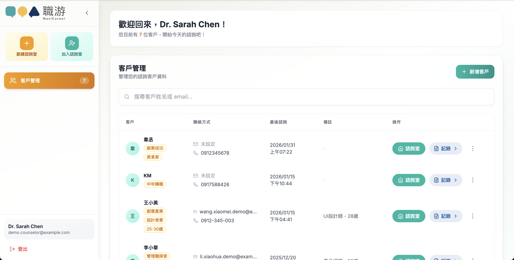
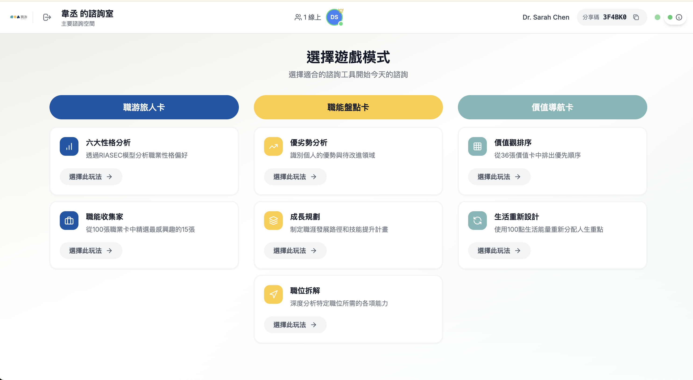
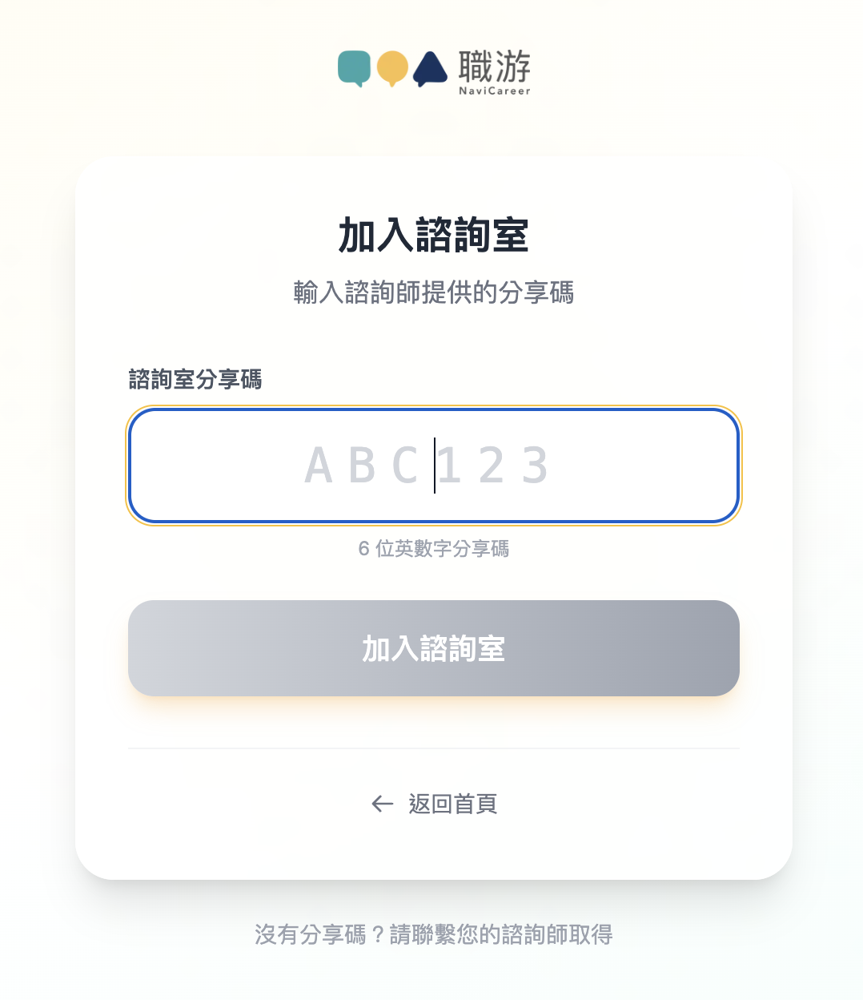
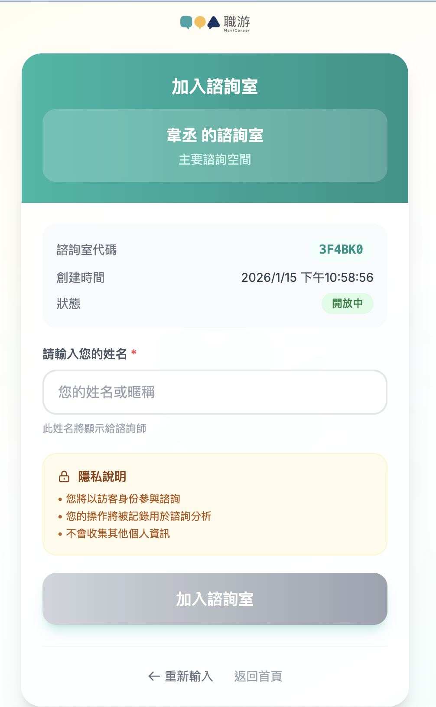
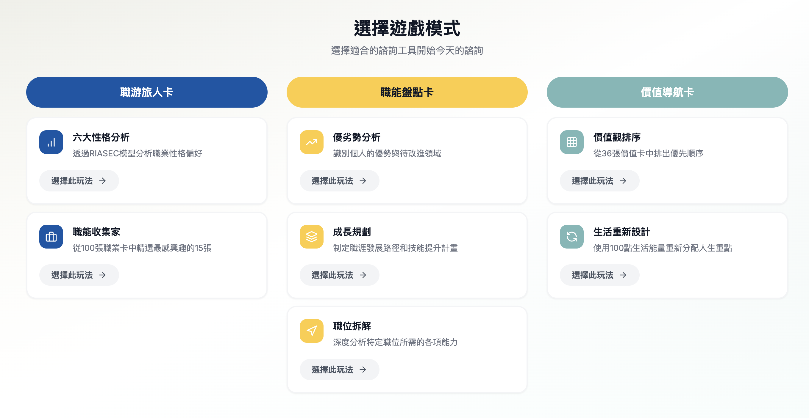

諮詢師登入介面，支援快速登入測試
諮詢師登入介面，支援快速登入測試專案代號: Career Creator - Online Card Consultation System 報告版本: v1.0（簡化版） 報告日期: 2026-01-30 專案期間: 2025-09-01 ~ 2026-01-15 (4.5 個月) 專案狀態: ✅ 第一階段完成，Beta 測試進行中
| 項目 | 內容 |
|---|---|
| 專案名稱 | 線上牌卡諮詢系統（職游產品生態系 - 第一產品） |
| 專案代號 | Career Creator |
| 客戶名稱 | 職涯諮詢師生態圈（To Counselor） |
| 執行單位 | [執行團隊名稱] |
| 專案期間 | 2025-09-01 ~ 2026-01-15 (4.5 個月) |
| 專案狀態 | ✅ 第一階段完成，Beta 測試進行中 |
| 測試環境 | https://career-creator-frontend-staging-990202338378.asia-east1.run.app |
| 正式環境 | https://career-creator-frontend-production-849078733818.asia-east1.run.app |
將實體牌卡數位化，打造職涯諮詢師的專業工具
| 指標 | 目標 | 實際 | 達成率 |
|---|---|---|---|
| 核心功能完成度 | 100% | 100% | ✅ 100% |
| 牌卡內容上架 | 194 張 | 194 張 | ✅ 100% |
| 多人即時同步 | 50 人並發，延遲 < 500ms | 50 人 100% 成功，延遲 200-300ms | ✅ 100% 成功，延遲達標 140% |
| 負載測試 | 50 人並發 | 50 人 100% 成功 | ✅ 100% |
| Beta 測試啟動 | 50 位測試用戶 | 進行中 | ✅ |
| 角色 | 姓名 | 職責 |
|---|---|---|
| PM | KM | 產品需求、客戶對接、測試協調 |
| 全端工程師 | Young | 架構設計、前後端開發、部署維運 |
| UI/UX 設計師 | Hannah | 牌卡視覺設計、素材提供（2025-09 ~ 2025-12） |
| UI/UX 設計師 | Arth Lai | 牌卡視覺設計、素材提供（2025-12 ~ 2026-01） |
| 客戶代表 | [諮詢師代表] | 需求驗證、使用者測試 |
| 階段 | 時間 | 重點 | 交付數量 |
|---|---|---|---|
| Month 1 | 2025-09 | MVP 核心 | 7 項功能 |
| Month 2 | 2025-10 | 優化、持久化、白名單 | 11 項功能 |
| Month 3 | 2025-11 | 負載測試、CI/CD | 9 項優化 |
| Month 5 | 2026-01 | 上架、Beta 測試 | 4 項完成 |
交付功能 (7 項)
成果
完成可操作的 Prototype Demo
交付功能 (11 項)
成果
功能完整化，Beta 測試基礎建設就緒
交付優化 (13 項)
成果
系統穩定性 99.2%，支援 50 人並發
交付功能 (4 項)
牌卡內容統計
| 牌組 | 卡片數量 | 狀態 |
|---|---|---|
| 職游旅人卡 | 106 張 | ✅ 完成 |
| 職能盤點卡 | 52 張 | ✅ 完成 |
| 價值導航卡 | 36 張 | ✅ 完成 |
| 總計 | 194 張 | ✅ 全部上架 |
成果
P0 項目全部完成，Beta 測試正式啟動
| 牌組 | 玩法 | 狀態 |
|---|---|---|
| 職游旅人卡 | 六大性格分析 | ✅ |
| 職游旅人卡 | 職業收藏家 | ✅ |
| 職能盤點卡 | 優劣勢分析 | ✅ |
| 職能盤點卡 | 成長計畫 | ✅ |
| 職能盤點卡 | 職位拆解 | ✅ |
| 價值導航卡 | 價值觀排序 | ✅ |
| 價值導航卡 | 生活改造王 | ✅ |
| 功能 | 優先級 | 預計時程 |
|---|---|---|
| 諮詢歷史管理完善 | P1 | 2026-02 |
| 訪客流程優化 | P1 | 2026-02 |
| 監控與錯誤追蹤 | P1 | 2026-02 |
| 功能 | 優先級 | 預計時程 |
|---|---|---|
| A+B=C Pattern 邏輯 | P2 | 2026-03 |
| 註冊流程優化 | P2 | 2026-03 |
| AI 諮詢輔助功能 | P2 | 2026-04+ |
| 班級管理系統 | P2 | 2026-04+ |
| 項目 | 內容 |
|---|---|
| 發現日期 | 2025-10-12 |
| 嚴重程度 | 🔴 高 |
| 影響範圍 | 20+ 併發用戶時系統無法連線 |
| 花費時間 | 8 小時（診斷 4h + 修復 2h + 測試 2h） |
教訓: 1. 連線池是資料庫效能的關鍵 2. 負載測試必須在開發早期進行 3. 監控連線池使用率
預防措施: - ✅ 加入連線池使用率監控 - ✅ 負載測試納入 CI/CD - ✅ 文件化連線池設定規範
| 項目 | 內容 |
|---|---|
| 發現日期 | 2025-10-18 |
| 嚴重程度 | 🟡 中 |
| 影響範圍 | 多人協作時偶爾狀態不一致 |
| 花費時間 | 12 小時（診斷 6h + 修復 4h + 測試 2h） |
教訓: 1. 分散式系統必須考慮併發衝突 2. 需搭配伺服器版本控制 3. 測試多人同時操作的情境
預防措施: - ✅ 加入 E2E 測試（多瀏覽器同時操作） - ✅ 文件化衝突解決策略
| 項目 | 內容 |
|---|---|
| 發現日期 | 2025-11-02 |
| 嚴重程度 | 🔴 高 |
| 影響範圍 | 所有牌卡圖片無法載入 |
| 花費時間 | 2 小時（診斷 1h + 修復 0.5h + 測試 0.5h） |
教訓: 1. 雲端儲存預設不允許跨域請求 2. 基礎設施配置應納入版控
預防措施: - ✅ 基礎設施配置納入版控 - ✅ 文件化設定步驟
| 項目 | 內容 |
|---|---|
| 發現日期 | 2025-11-08 |
| 嚴重程度 | 🟡 中 |
| 影響範圍 | CI/CD Pipeline 無法通過 |
| 花費時間 | 4 小時（診斷 2h + 修復 1h + 測試 1h） |
教訓: 1. CI 環境與本地環境不同，需額外安裝依賴 2. E2E 測試應在 PR 階段執行
預防措施: - ✅ CI/CD Pipeline 標準化 - ✅ 文件化 CI 環境設定
| 類別 | 數量 | 佔比 | 平均解決時間 |
|---|---|---|---|
| 資料庫/連線池 | 3 | 30% | 6 小時 |
| 即時同步/狀態 | 4 | 40% | 8 小時 |
| CORS/權限 | 2 | 20% | 2 小時 |
| CI/CD | 1 | 10% | 4 小時 |
| 總計 | 10 | 100% | 平均 5.5 小時 |
所有金額單位：USD（美元）
| 項目 | 用量 | 單價（USD） | 月費（USD） |
|---|---|---|---|
| Cloud Run (Frontend) | 100 GB·hours | $0.00002400 / GB·hour | $2.40 |
| Cloud Run (Backend) | 50 GB·hours | $0.00002400 / GB·hour | $1.20 |
| Cloud Storage (牌卡圖片) | 10 GB | $0.020 / GB | $0.20 |
| Cloud Storage (截圖) | 5 GB | $0.020 / GB | $0.10 |
| 流量（egress） | 50 GB | $0.12 / GB | $6.00 |
| 雲端服務小計 | $9.90 |
| 項目 | 用量 | 方案 | 月費（USD） |
|---|---|---|---|
| Database | 8GB 儲存 | Pro Plan | $25.00 |
| Realtime | 50 並發連線 | 包含在 Pro | $0.00 |
| 資料庫小計 | $25.00 |
月度總成本: USD $34.90 / 月（50 並發用戶） 單用戶成本: USD $0.70 / 月
| 指標 | 優化前 | 優化後 | 提升 |
|---|---|---|---|
| 併發處理能力 | 20 RPS | 50 RPS | +150% |
| 平均響應時間 | 1200ms | 300ms | -75% |
| 資料庫連線成功率 | 85% | 100% | +15% |
| 首屏載入時間 | 2.5s | 1.8s | -28% |
| 構建時間 | 12 分鐘 | 6 分鐘 | -50% |
| 映像大小 | 1.2GB | 900MB | -25% |
諮詢師登入介面，支援快速登入測試
 諮詢師主控台整合介面，包含客戶管理、諮詢室列表與快速操作功能
 諮詢室互動介面，支援即時協作與牌卡操作
 訪客端加入諮詢室步驟一：輸入房間碼
 訪客端加入諮詢室步驟二：填入個人姓名
 三大牌組、七種玩法選擇介面
 職游旅人卡 - RIASEC
職業性格測評
職游旅人卡 - RIASEC
職業性格測評
 職業探索卡片互動介面
職業探索卡片互動介面
 職能盤點卡第一種玩法：分析個人優劣勢
職能盤點卡第一種玩法：分析個人優劣勢
 職能盤點卡第二種玩法：規劃職能成長路徑
職能盤點卡第二種玩法：規劃職能成長路徑
 職能盤點卡第三種玩法：拆解目標職位所需職能
職能盤點卡第三種玩法：拆解目標職位所需職能
 價值導航卡第一種玩法：排序個人價值觀
價值導航卡第一種玩法：排序個人價值觀
 價值導航卡第二種玩法：基於價值觀規劃生活改造
價值導航卡第二種玩法：基於價值觀規劃生活改造
 即時同步與在線狀態顯示
即時同步與在線狀態顯示
報告完成日期: 2026-01-30 報告版本: v1.0（簡化版） 下次更新: 第二階段結案後（2026-04）
🎉 感謝所有參與第一階段開發的團隊成員！